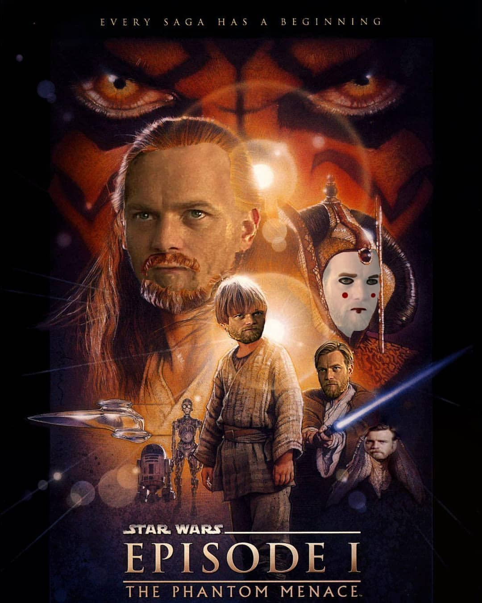

Quite frankly, my Photoshop skills are not as high because I do not work in it as often, as in video
editing software. However, Photoshop is still integrated with the process of editing video so
occasionally I use it. I can do basic things in it and if don't know something, I will just google how
to do it. However, I rarely do it, because, usually, my skills were enough in what I did so far. Some of
my skills:
- cutting out objects;
- removing objects from the photo;
- removing acne from a face;
- swapping faces.